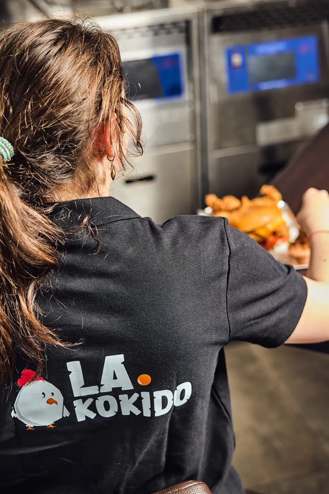

Råvarene
Vi bruker bare naturlig kylling og ingen kunstige tilsetninger. Det smaker du.
Les om råvarene- Fersk kyllingFersk og smakfull i hver restaurant.
- Naturlige ingredienserRene smaker, uten noe kunstig.
- Egne krydderblandingerPaneringer, marinader og krydder er våre egne.
- Samme kvalitet overaltSpesielle trykkfrityrer gir samme resultat hver gang.
Over 65 år med fritert kylling
La Kokido Fried Chicken bygger på over 65 års erfaring med uimotståelig, trykkfritert kylling. Vi gir operatørene våre det de trenger for å servere kylling gjestene kommer tilbake for.
- 65+
- år med erfaring i trykkfritert kylling.
- 13
- restauranter serverer La Kokido i dag.
- 2
- land: Norge og Marokko.

Bli operatør
Driver du restaurant? Ta La Kokido Fried Chicken inn på menyen. Du får et komplett, utprøvd konsept.
Slik fungerer det